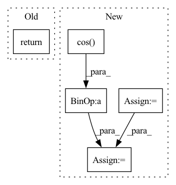

Pattern ID :5375
Before Change
def derivative(self, t):
_, index = self._interpret_t(t)
return self._derivs[..., index, :]
After Change
def derivative(self, t):
fractional_part, index = self._interpret_t(t)
deriv = self._derivs[..., index, :]
if self._reparameterise:
prev_t = self._t[index]
next_t = self._t[index + 1]
diff_t = next_t - prev_t
fractional_part = fractional_part / diff_t
mult = 1 - torch.cos( _two_pi * fractional_part)
deriv = deriv * mult
return deriv
In pattern: SUPERPATTERN
Frequency: 3
Non-data size: 5
Instances Fragment ID: 19138597
Project Name: patrick-kidger/torchcde
Commit Name: 40205c40075bf8b7e6d424210d12196330f90a8d
Time: 2020-06-13
Author: 33688385+patrick-kidger@users.noreply.github.com
File Name: torchcontroldiffeq/interpolation_linear.py
M Class Name: LinearInterpolation
N Class Name: LinearInterpolation
M Method Name: derivative(2)
N Method Name: derivative(2)
M Parent Class: path.Path
N Parent Class: path.Path
M File Name: torchcontroldiffeq/interpolation_linear.py
N File Name: torchcontroldiffeq/interpolation_linear.py
M Start Line: 151
M End Line: 151
N Start Line: 161
N End Line: 172
Before Change
) -> "SO3":
if len(size) != 1:
raise ValueError("The size should be 1D.")
return SO3.exp_map(
2
* theseus.constants.PI
* torch.rand(After Change
u2, u3 = u[1:3] * 2 * torch.pi
a = torch.sqrt(1.0 - u1)
b = torch.sqrt(u1)
quaternion = torch.stack(
[
a * torch.sin(u2),
a * torch.cos( u2) ,
b * torch.sin(u3),
b * torch.cos(u3),
], Fragment ID: 19138593
Project Name: facebookresearch/theseus
Commit Name: cca7362cf16e6031041d24805e8a3f8c10c1ec72
Time: 2022-08-31
Author: yibrenth@gmail.com
File Name: theseus/geometry/so3.py
M Class Name: SO3
N Class Name: SO3
M Method Name: rand(0)
N Method Name: rand(0)
M Parent Class: LieGroup
N Parent Class: LieGroup
M File Name: theseus/geometry/so3.py
N File Name: theseus/geometry/so3.py
M Start Line: 49
M End Line: 61
N Start Line: 51
N End Line: 74
Before Change
// Explanation forthcoming
seq_len = t.shape[-2]
freqs = freqs[:, :, -seq_len:]
return (t * freqs.cos()) + (rotate_half(t) * freqs.sin())
After Change
num_features = frequencies.shape[-1] // The number of features we wish to rotate
x_rotate = x[..., :num_features] // Features to rotate
x_orig = x[..., num_features:] // Features to keep, as is
seq_len = x_rotate.shape[-2] // Length of the input
frequencies = frequencies[:, :, -seq_len:] // Take the frequencies we need (just up to seq_len)
x_rotate = (x_rotate * frequencies.cos() ) + (rotate_half(x_rotate) * frequencies.sin()) // Apply rotation
x = torch.cat([x_rotate, x_orig], dim=-1) // Piece back together
return x
Fragment ID: 19138588
Project Name: antofuller/configaformers
Commit Name: c3a00a8d424ad3ee1b05dd8cf0dc58b4c3e2252e
Time: 2021-09-10
Author: afuller187187@gmail.com
File Name: positional_and_masking_utils.py
M Class Name: AnonimousClass
N Class Name: AnonimousClass
M Method Name: apply_rotary_pos_emb(2)
N Method Name: apply_rotary_pos_emb(2)
M Parent Class:
N Parent Class:
M File Name: positional_and_masking_utils.py
N File Name: positional_and_masking_utils.py
M Start Line: 114
M End Line: 119
N Start Line: 123
N End Line: 136